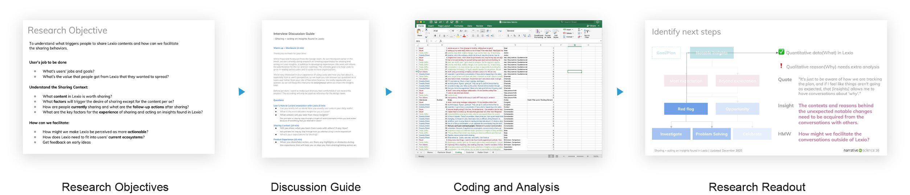

Lexio is our newly launched Business Intelligence tool, which turns
your data from Salesforce, Google Analytics, etc into meaningful
insights and stories for the teams to do their daily job. We are the
leading player in the field of data storytelling and have become a
part of Salesforce.
During my internship, I worked in
our three-people design and research team. I designed the onboarding
experience and sharing function. It helped users to understand the
story behind data and empowers them to take action, thus, doubling
one-week retention and helping us scale to more organizations.
Faye Sun - User Research
Yuanyuan Hu - Product Design

With the mission of humanizing data analytics, we decided to use language as the media to communicate insights. That means we are very different from our competitors. How can we better communicate our product and bring unique value to the teams is a big opportunity and challenge for our retention and growth. The solution I designed directly contributes to the weekly retention rate and leads to long-term contracts.
Sharing, as the main way of acting on Lexio's insights, provides a lot of value to the user and the team.
Commenting can help people engage with our product, increase retention, and help with organic growth.
Quantitative data always has its limits, people's comments can reveal the story behind the scene.
We talked to 9 users of Lexio, The user sample includes team managers, sales representatives, and marketing experts, given the existing active users. we asked them questions from generally how they are using Lexio, what drives them to share, to what content and how do they share.
I analyzed and synthesized the research data, from which we (1) understood deeply what users wanted to achieve with our product. (2) had an overview of the current sharing experience and understood the pain points. (3) tested a few concepts.
After the research readout, I planned and hosted a brainstorming section with the whole product team. I framed research insights into solution-oriented HMWs. Rather than just listing the HMWs, I put them into wireframe-like boxes to make them connected and tangible. That helped our participants to digest a lot of information, and use that for brainstorming. After participants run out of their initial idea, I let them move ideas to the journey, so they can see which ideas come together, and build upon each other's ideas. Here is just an overview of our design principles.
We went a little bit broad beyond sharing and commenting and got a lot of ideas about the collaboration function. I captured and synthesized all these ideas and started designing for them.
How do we prioritize these features? I connected with PMs, heads of design, and CPO. We all agreed that rather than find the smallest cost/value. Proving our value as a product is the top priority. Therefore, I sorted all the ideas according to the problem it's trying to solve and highlighted the one that solves the problem that the user cares about the most.